Tạo lớp, thêm học sinh, rồi chỉ cần chọn lớp và buổi là AI chấm bài tập về nhà và ghi nhận xét thẳng vào Google Doc của từng học sinh. Muốn khỏi phải bấm mỗi tuần thì hẹn giờ để hệ thống tự chấm.
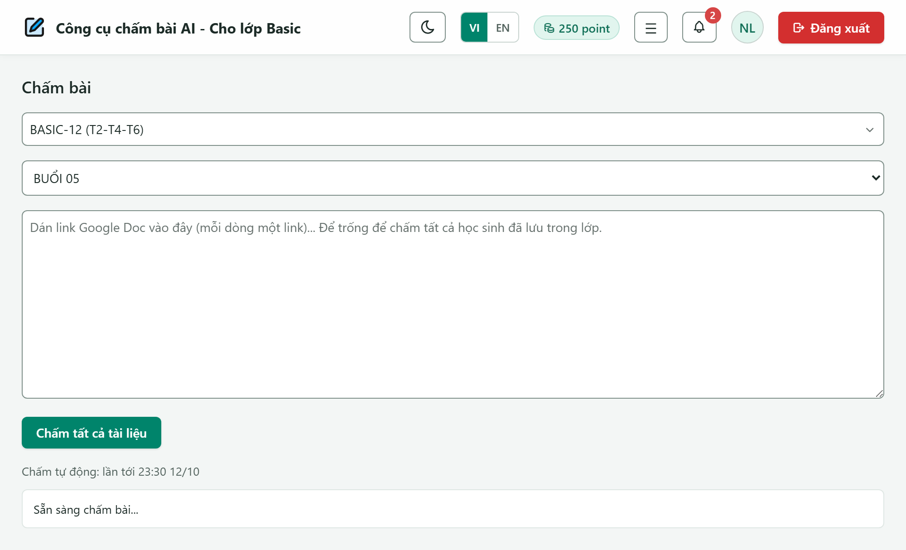
Công cụ chấm bài AI · bản đang chạy (production)Phiên bản 11/10/2026
1
Công cụ này làm gì?
Học sinh làm bài tập về nhà trong Google Doc của mình (mỗi buổi một tab, ví dụ BUỔI 05). Thầy cô chọn lớp và buổi, bấm Chấm tất cả tài liệu. Máy chủ đọc bài, cho AI chấm, rồi ghi nhận xét vào đúng chỗ trong Doc của từng em.
✓
Chấm tay: bấm là chấm
Chọn lớp và buổi, bấm một nút. Máy chủ chấm cả lớp, thầy cô đóng tab cũng được.
↻
Chấm tự động hằng tuần
Hẹn ngày và buổi (sáng, chiều, tối) một lần. Mỗi tuần hệ thống tự chấm rồi chuyển lớp sang buổi kế tiếp.
!
Có thông báo
Chuông thông báo báo khi chấm xong, báo trước 30 phút khi sắp chấm tự động. Bật được cả trên điện thoại.
P
1 bài = 1 point
Mỗi bài được chấm trừ 1 point. Bài đã có nhận xét được bỏ qua, không trừ thêm.
Đăng nhập
Mở trang công cụ chấm bài (link admin gửi) và đăng nhập bằng Tài khoản/Mật khẩu admin cấp hoặc bằng Gmail (tab Đăng nhập Google). Quên mật khẩu thì liên hệ admin.
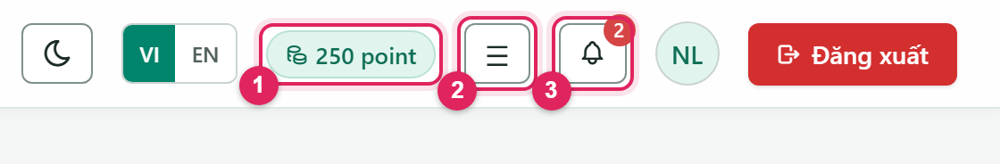
Góc trên bên phải màn hình.
1Số point hiện có. Mỗi bài chấm trừ 1 point (mục 9).
2Menu ☰: mở mọi màn hình của công cụ.
3Chuông thông báo, số đỏ là số thông báo chưa đọc (mục 10).
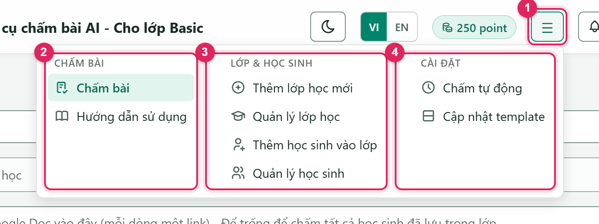
Menu ☰ có 3 nhóm.
1Bấm nút ☰ để mở menu.
2Chấm bài: màn chấm bài chính (mục 4), và Hướng dẫn sử dụng: mở tài liệu này ở tab mới (có nút Tải PDF).
3Lớp & học sinh: tạo lớp, thêm học sinh, quản lý lớp/học sinh (mục 2, 3, 8).
4Cài đặt: Chấm tự động (mục 6) và Cập nhật template cho lớp IELTS (mục 7).
Mục lục
1Công cụ này làm gì?
2Tạo lớp học
3Thêm học sinh vào lớp
4Chấm bài (chấm tay)
5Theo dõi và xem kết quả
6Chấm tự động hằng tuần
7Cập nhật template IELTS
8Quản lý lớp và học sinh
9Point: tính thế nào?
10Thông báo
11Thông báo lỗi và cách xử lý
12Câu hỏi thường gặp
2
Tạo lớp học
Mỗi lớp chỉ cần tạo một lần. Vào menu ☰ → Thêm lớp học mới.
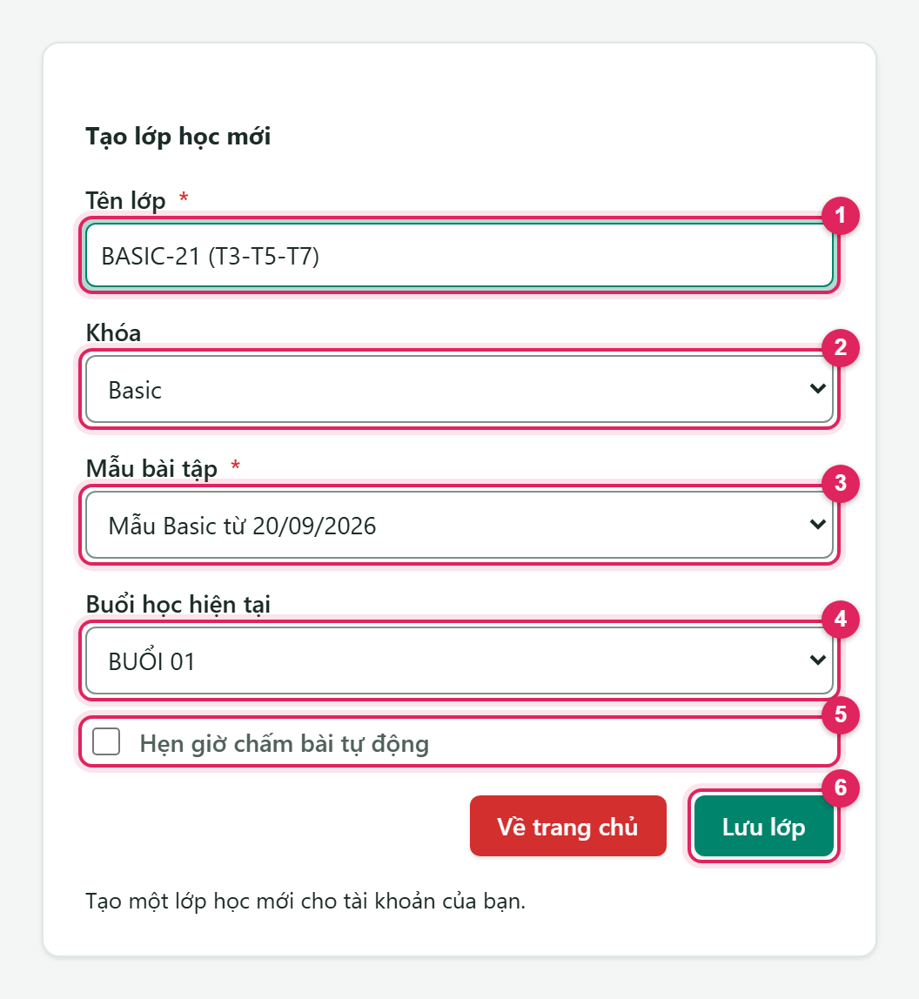
Màn Tạo lớp học mới.
1Tên lớp. Không được trùng với lớp khác trong hệ thống. Nên ghi kèm lịch học, ví dụ BASIC-21 (T3-T5-T7).
2Khóa: Basic, IELTS Writing hoặc HS. Khóa quyết định kiểu chấm. Chưa có khóa nào thì nhờ admin thêm.
3Mẫu bài tập: mẫu Google Doc mà học sinh của lớp đang dùng. Chọn sai mẫu thì AI không nhận ra bảng bài tập.
4Buổi học hiện tại: buổi sẽ chấm lần tới.
5Tích Hẹn giờ chấm bài tự động nếu muốn đặt lịch luôn (mục 6). Có thể làm sau.
6Bấm Lưu lớp.
Đã tạo lớp, muốn sửa?Đổi tên, đổi khóa, đổi mẫu bài tập hoặc buổi hiện tại ở menu ☰ → Quản lý lớp học → biểu tượng bút chì (mục 8).
3
Thêm học sinh vào lớp
Hệ thống chỉ chấm những học sinh đã có link Google Doc trong lớp. Vào menu ☰ → Thêm học sinh vào lớp.
Cách 1: Thêm từng em
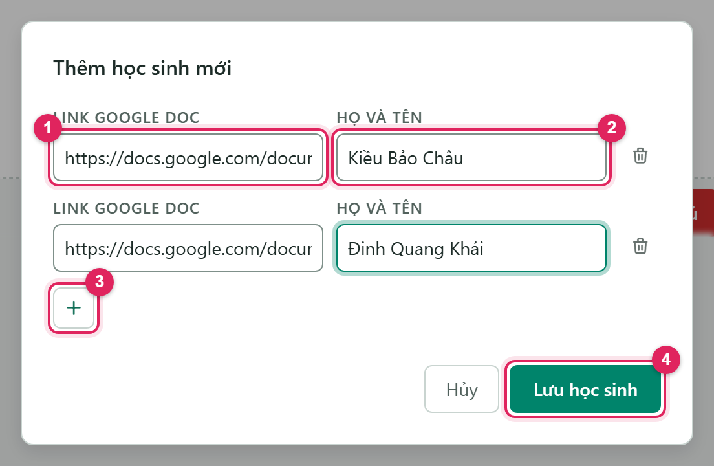
Bảng Thêm học sinh mới.
Chọn lớp ở ô Tên lớp, bấm + Thêm học sinh, rồi điền:
1Link Google Doc của học sinh (link đầy đủ, dạng https://docs.google.com/document/d/…).
2Họ và tên. Hệ thống thường tự lấy tên từ tiêu đề Doc. Nếu tên sai hoặc trống, gõ lại.
3Bấm + để thêm dòng cho em tiếp theo.
4Bấm Lưu học sinh. Danh sách hiện ra bên dưới.
Cách 2: Import từ file Excel
Bấm Import danh sách học sinh và chọn file Excel có 2 cột: tên học sinh và link Google Doc. Dòng đầu nên là tiêu đề, ví dụ “Họ tên” và “Link doc”. Không có tiêu đề thì cột A được hiểu là tên, cột B là link. Dòng không hợp lệ bị bỏ qua, và màn hình báo số dòng đã bỏ qua.
Bước cuối: lưu danh sách
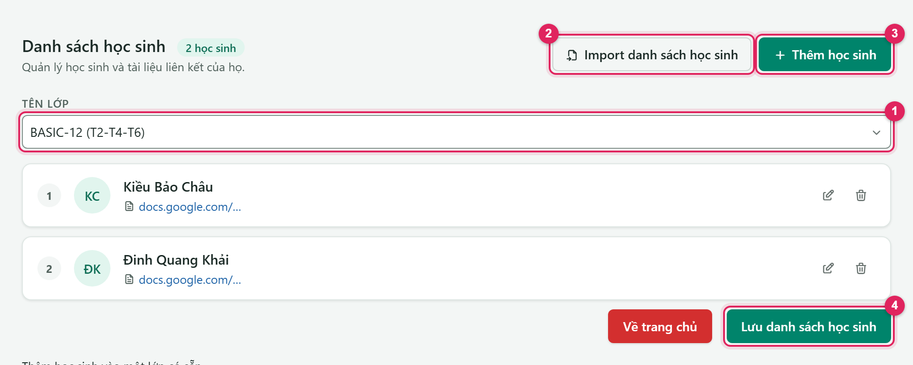
Kiểm tra lớp 1, thêm bằng 2 hoặc 3, rồi bấm 4 Lưu danh sách học sinh.
Phải bấm “Lưu danh sách học sinh”Các em mới chỉ được lưu vào lớp khi thầy cô bấm nút Lưu danh sách học sinh ở cuối trang. Nếu hai học sinh dùng chung một Google Doc (hoặc Doc đã có trong lớp), hệ thống báo “Trùng link Google Doc” và chưa thêm em nào. Sửa link bị trùng rồi lưu lại.
4
Chấm bài (chấm tay)
Menu ☰ → Chấm bài (đây cũng là màn hình mở ra sau khi đăng nhập).
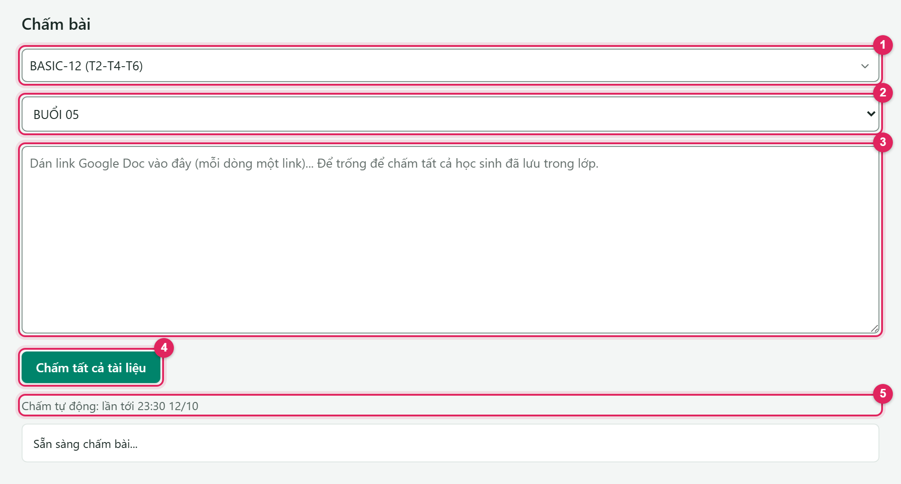
Màn Chấm bài sau khi chọn lớp.
Chọn lớp1. Gõ vài chữ của tên lớp để tìm nhanh.
Kiểm tra buổi2. Ô này tự hiện buổi hiện tại của lớp. Nếu đổi sang buổi khác, hệ thống hỏi “Cập nhật buổi học hiện tại là BUỔI X?”. Bấm OK thì buổi đó trở thành buổi hiện tại của lớp, và lịch chấm tự động cũng sẽ chấm từ buổi đó.
Chọn ai được chấm3.
Để trống: chấm tất cả học sinh đã lưu trong lớp. Đây là cách thường dùng.
Dán link Google Doc, mỗi dòng một link: chỉ chấm những Doc này, ví dụ một em nộp muộn.
Bấm Chấm tất cả tài liệu4. Dòng chữ nhỏ 5 cho biết lớp đã được hẹn giờ chấm tự động hay chưa.
Trước khi bấm chấm, kiểm tra nhanh
Doc của học sinh có tab đúng tên buổi, ví dụ BUỔI 05. Doc thiếu tab buổi đó sẽ bị bỏ qua.
Học sinh làm bài trong bảng bài tập của mẫu, không xoá hay đổi đề bài.
Đủ point cho số bài cần chấm (góc trên bên phải).
5
Theo dõi và xem kết quả
Trong lúc chấm
Nút chuyển thành Đang xử lý… và khung trạng thái báo tiến độ. Việc chấm chạy trên máy chủ, nên thầy cô có thể đóng tab hoặc tắt máy. Chấm xong sẽ có thông báo ở chuông.
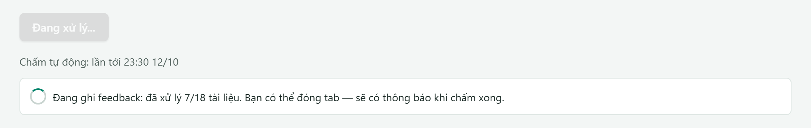
Đang ghi nhận xét vào Doc: đã xử lý 7/18 tài liệu.
Khi chấm xong
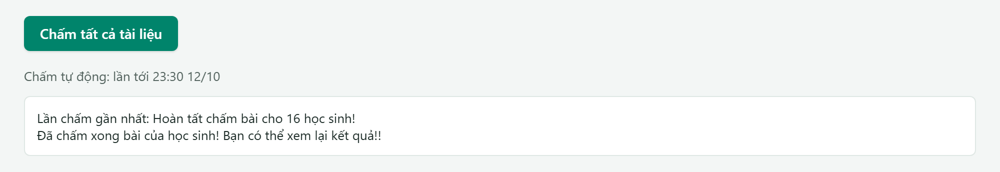
Mở lại màn Chấm bài với cùng lớp và buổi sẽ thấy kết quả lần chấm gần nhất.
Con số trong thông báo là số Doc đã được ghi nhận xét (và số point đã trừ). Học sinh chưa làm bài, hoặc đã được chấm từ trước, không tính.
Nhận xét nằm ở đâu trong Google Doc?
Khóa
AI ghi nhận xét vào
Basic
Cột Chữa bài của từng bảng bài tập, đúng dòng của câu đó. Câu sai được sửa và giải thích ngắn. Đoạn văn đúng hết thì ghi “Các câu đúng hết rồi nha! ^^”.
IELTS Writing
Bài viết: bảng “Bài chữa | Bài cải thiện”, bên dưới có hai dòng Nhận xét chung và Lời khuyên cải thiện. Lỗi ghi dạng sai → sửa, kèm giải thích in nghiêng. Bài viết câu: cột GV chữa/nhận xét. Câu đúng ghi ✅, câu sai được sửa ngay trong câu.
HS (cấp 1–2)
Chữ màu đỏ ngay sau từng câu trả lời: ✅ nếu đúng, nếu sai thì có đáp án đúng và giải thích ngắn.
Thầy cô vẫn sửa được nhận xétNhận xét AI chỉ là chữ trong Doc, nên thầy cô sửa hoặc thêm trực tiếp như bình thường. Bài đã có nhận xét sẽ được bỏ qua ở các lần chấm sau và không trừ point thêm. Muốn chấm lại từ đầu thì nhờ admin xoá nhận xét của buổi đó trước.
6
Chấm tự động hằng tuần
Thay vì bấm chấm mỗi buổi, thầy cô chọn ngày chấm và buổi (Sáng, Chiều hoặc Tối) một lần. Từ đó mỗi tuần hệ thống tự làm phần còn lại:
30 phút trước giờ chấm: hệ thống đếm số học sinh đã làm bài và gửi thông báo “Sắp chấm bài tự động”.
Đến giờ: chấm buổi hiện tại của lớp, giống hệt khi bấm chấm tay. Mỗi bài tính 1 point.
Chấm xong: thông báo “Đã chấm xong (tự động)”, và lớp được chuyển sang buổi kế tiếp.
Bật chấm tự động
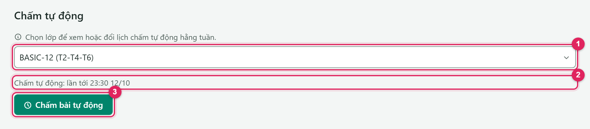
Menu ☰ → Cài đặt → Chấm tự động.
1Chọn lớp.
2Dòng trạng thái: “Chưa hẹn giờ chấm tự động”, hoặc giờ chấm lần tới nếu đã hẹn.
3Bấm Chấm bài tự động để mở bảng hẹn giờ.
Trong bảng “Chấm bài tự động · tên lớp”:
Ngày chấm: chọn ngày chấm gần nhất sắp tới, ví dụ Thứ 2 12/10. Hệ thống chỉ lấy thứ trong tuần để lặp lại.
Buổi: bấm Sáng, Chiều hoặc Tối. Giờ cụ thể của từng buổi do admin đặt, ngoài giờ cao điểm.
Lớp học nhiều buổi/tuần: bấm + Thêm ngày chấm, mỗi buổi học một ngày (tối đa 7, mỗi thứ chỉ một lần).
Đọc lại dòng “Hằng tuần: chấm vào Tối Thứ 2.” và “Lần chấm đầu: …”, rồi bấm Bật chấm tự động.
Mở lại bảng để Lưu lịch sau khi sửa ngày/buổi, hoặc Tắt chấm tự động. Cũng mở được bảng này từ biểu tượng đồng hồ ở Quản lý lớp học, hoặc tích ô hẹn giờ ngay khi tạo lớp mới.
Lượt bị huỷ thì lớp KHÔNG tự chuyển buổiNếu chưa học sinh nào làm bài, không đủ point, hoặc cần đăng nhập lại Google, lượt đó bị huỷ, không trừ point, và thầy cô nhận thông báo. Khi đó hãy chấm tay buổi đó (nếu cần), rồi đổi buổi hiện tại sang buổi tiếp theo ở ô chọn buổi của màn Chấm bài.
Đăng nhập bằng Google?Hệ thống cần quyền để chấm thay khi thầy cô không mở web. Nếu gặp “Cần đăng nhập lại bằng Google…”, bấm Đăng xuất, đăng nhập lại bằng Google rồi lưu lịch lại.
7
Cập nhật template IELTS (chỉ lớp IELTS)
Doc của học viên IELTS cần đúng template hiện tại thì AI mới có chỗ ghi nhận xét: mỗi bài viết một bảng “Bài chữa | Bài cải thiện” kèm Nhận xét chung / Lời khuyên cải thiện, và cột nhận xét ở bảng viết câu. Doc đang ở template cũ sẽ không được chấm cho tới khi cập nhật.
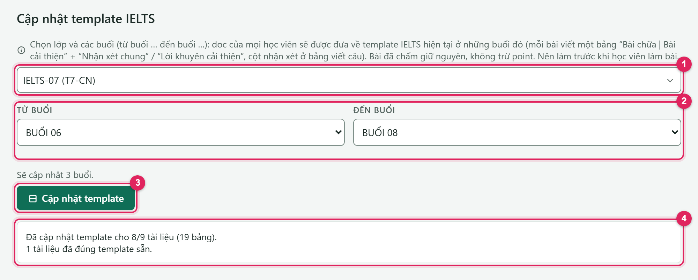
Menu ☰ → Cài đặt → Cập nhật template.
Chọn lớp IELTS 1.
Chọn Từ buổi và Đến buổi2. Mặc định là buổi hiện tại. Có thể chọn nhiều buổi một lần.
Bấm Cập nhật template3 và xác nhận.
Đọc kết quả 4, ví dụ “Đã cập nhật template cho 8/9 tài liệu (19 bảng). 1 tài liệu đã đúng template sẵn.”
Nên làm trước khi học viên làm bàiCập nhật template không trừ point và giữ nguyên bài đã chấm. Không cập nhật được khi buổi đó đang được chấm: đợi chấm xong rồi làm lại. Nếu báo có tài liệu “không cập nhật được” thì bấm lại lần nữa.
Khi chấm mà gặp “… tài liệu vẫn đang ở template IELTS cũ nên chưa chấm được”: cập nhật template cho buổi đó, rồi bấm chấm lại.
8
Quản lý lớp và học sinh
Quản lý lớp học
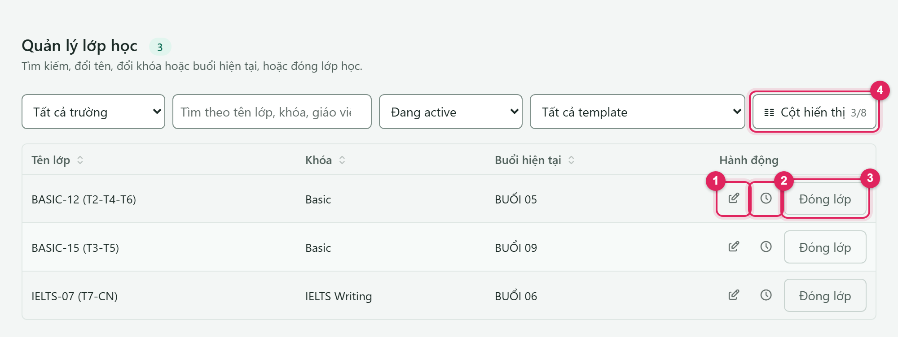
Menu ☰ → Quản lý lớp học.
1Sửa: đổi tên lớp, khóa, mẫu bài tập hoặc buổi hiện tại.
2Đồng hồ: mở bảng hẹn giờ chấm tự động của lớp (mục 6).
3Đóng lớp khi lớp đã học xong. Không mở lại được, và lịch chấm tự động của lớp cũng dừng.
4Cột hiển thị: bật thêm cột, ví dụ cột Chấm tự động để xem lịch của mọi lớp cùng lúc.
Quản lý học sinh
Menu ☰ → Quản lý học sinh: chọn lớp (có thể chọn thêm buổi) rồi bấm Tìm kiếm. Bảng cho biết từng em, link bài tập, em nào đã chấm. Từ đây có thể Mở bài tập hoặc Xóa khỏi lớp (một em hoặc nhiều em đã chọn).
9
Point: tính thế nào?
Mỗi Doc được AI ghi nhận xét trừ 1 point, cả chấm tay lẫn chấm tự động.
Không trừ với Doc chưa làm bài, Doc đã có nhận xét từ trước, Doc bị bỏ qua (thiếu tab buổi, chưa đúng template…), và với Cập nhật template.
Số point hiện ở góc trên bên phải và cập nhật ngay sau khi chấm.
Hết point giữa chừng thì hệ thống dừng ở bài đang chấm và báo “Hết point — dừng chấm các bài còn lại…”. Các bài đã chấm vẫn giữ nhận xét.
Muốn nạp thêm point: liên hệ admin.
10
Thông báo
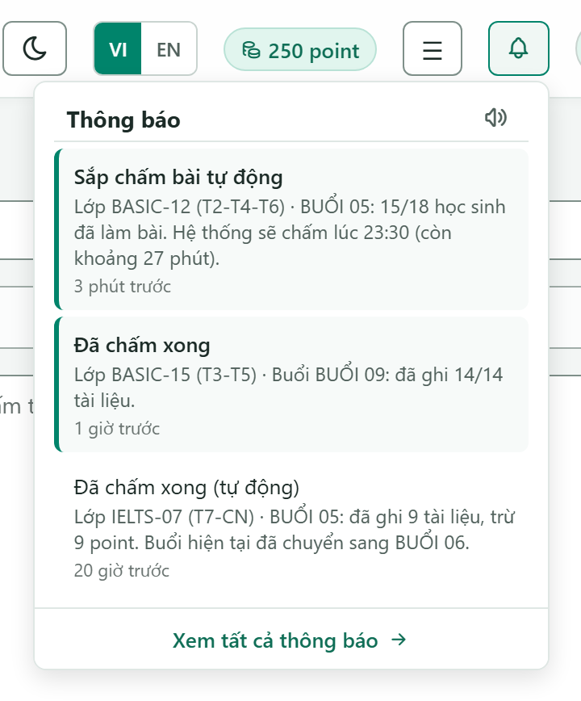
Bấm chuông để xem thông báo.
Bấm vào một thông báo để mở thẳng màn Chấm bài với đúng lớp và buổi đó.
Bật thông báo đẩy (dòng đầu danh sách, khi trình duyệt cho phép) để nhận thông báo cả khi không mở web. Rất nên bật trên điện thoại. Trên iPhone/iPad, cần thêm trang vào Màn hình chính trước.
Biểu tượng loa: bật/tắt tiếng chuông khi có thông báo mới.
Xem tất cả thông báo: danh sách đầy đủ, lọc theo trạng thái, loại, mức độ, thời gian.
Thông báo
Ý nghĩa
Thầy cô cần làm
Đã chấm xong
Lượt chấm tay đã xong, kèm số tài liệu đã ghi.
Mở vài Doc kiểm tra nếu muốn.
Sắp chấm bài tự động
30 phút nữa sẽ chấm, kèm số em đã làm bài.
Không cần làm gì. Có thể nhắc em chưa làm nộp nhanh.
Đã chấm xong (tự động)
Đã chấm và chuyển lớp sang buổi kế tiếp.
Không cần làm gì.
Huỷ chấm tự động: không có học sinh nào làm bài
Không chấm, không trừ point.
Lớp nghỉ thì thôi. Buổi học bù thì chấm tay.
Huỷ chấm tự động: không đủ point
Không đủ point cho số bài cần chấm.
Nạp point, chấm tay, đổi buổi hiện tại.
Huỷ chấm tự động: cần đăng nhập lại Google
Hệ thống mất quyền chấm thay.
Đăng xuất, đăng nhập lại bằng Google, chấm tay.
Cần đăng nhập lại Google để chấm tiếp
Lượt chấm tay dừng giữa chừng.
Đăng nhập lại, bấm chấm lại. Doc đã chấm được bỏ qua.
Bỏ lỡ lượt chấm tự động / Chấm bài … không thành công
Sự cố phía hệ thống (hiếm).
Chấm tay. Lặp lại nhiều lần thì báo admin.
11
Thông báo lỗi và cách xử lý
Các dòng dưới đây hiện ở khung trạng thái của màn Chấm bài.
Thầy cô thấy
Cách xử lý
Nút Chấm tất cả tài liệu bị mờ, kèm “Chọn lớp để bắt đầu chấm.” / “Chọn buổi học cần chấm.”
Chọn lớp, rồi chọn buổi.
“Không tìm thấy tài liệu học sinh nào cho lớp này.”
Lớp chưa có học sinh: thêm học sinh (mục 3). Nếu dán link, kiểm tra link đúng dạng Google Doc.
“Tất cả tài liệu đã được chấm. Không có gì để chấm.”
Mọi bài đã có nhận xét. Không trừ point.
“Không có bài nào được chấm.”
Chưa em nào làm bài ở buổi này, hoặc Doc thiếu tab buổi. Kiểm tra đúng buổi chưa.
“… tài liệu bị bỏ qua vì đã có feedback cũ, trong đó vẫn còn bài tập chưa chấm.”
Doc đã có nhận xét từ lần trước nên được bỏ qua. Muốn chấm phần còn lại thì nhờ admin xoá nhận xét cũ của buổi đó rồi chấm lại.
“Không đủ point: cần chấm N bài, … còn M point.”
Liên hệ admin nạp thêm point.
“Vui lòng đăng xuất và đăng nhập lại bằng Google…” / “Phiên đăng nhập Google đã hết hạn…”
Đăng xuất, đăng nhập lại bằng Google, bấm chấm lại. Doc đã chấm được bỏ qua.
“… vẫn đang ở template IELTS cũ nên chưa chấm được.”
Cập nhật template (mục 7) rồi chấm lại.
“Chấm bài không hoàn tất (…). Vui lòng thử lại.”
Bấm chấm lại. Doc đã chấm không bị chấm hay trừ point lần nữa. Vẫn lỗi thì báo admin kèm tên lớp và buổi.
“Tải dữ liệu giáo viên thất bại…”
Bấm Thử lại. Vẫn lỗi thì đăng xuất và đăng nhập lại.
AI chấm thiếu hoặc nhận xét chưa đúng?Sửa trực tiếp trong Doc, rồi gửi admin tên lớp, buổi, tên học sinh, câu bị chấm sai (chụp màn hình càng tốt) để chỉnh AI cho các lần sau.
12
Câu hỏi thường gặp
Có cần mở trang web trong lúc chấm không?
Không. Sau khi bấm chấm (hoặc khi chấm tự động chạy), máy chủ tự làm. Đóng tab, tắt máy đều được. Kết quả hiện ở chuông thông báo.
Bấm chấm hai lần có bị trừ point hai lần không?
Không. Lần bấm thứ hai chỉ hiện tiến độ của lượt đang chạy. Bài đã có nhận xét luôn được bỏ qua.
Một em nộp muộn, chấm riêng em đó thế nào?
Ở màn Chấm bài, chọn đúng lớp và buổi, dán link Doc của em vào ô lớn, rồi bấm chấm. Nếu lớp đã tự chuyển sang buổi mới, chọn lại buổi cũ trước khi chấm, chấm xong thì đổi lại buổi hiện tại.
Muốn chấm lại một bài đã có nhận xét?
Nhờ admin xoá nhận xét của buổi đó, rồi chấm lại. Bài chấm lại tính point như bình thường.
Đổi “buổi hiện tại” ảnh hưởng gì?
Lần chấm tay mặc định và lượt chấm tự động tiếp theo sẽ chấm buổi vừa chọn. Đây cũng là cách sửa khi lớp bị lệch buổi.
Học sinh đổi Doc mới?
Xoá em đó khỏi lớp ở Quản lý học sinh, rồi thêm lại với link mới ở Thêm học sinh vào lớp.
Lớp nghỉ lễ một tuần có cần tắt chấm tự động?
Không bắt buộc. Không em nào làm bài thì lượt đó tự huỷ, không trừ point, và lớp vẫn đứng ở buổi cũ. Nghỉ dài ngày thì có thể tắt rồi bật lại sau.
Tóm tắt 30 giây
Menu ☰ → Thêm lớp học mới (khóa, mẫu bài tập, buổi hiện tại) → Thêm học sinh vào lớp → Lưu danh sách học sinh.
Lớp IELTS: Cập nhật template cho các buổi sắp làm.
Chấm bài → chọn lớp → kiểm tra buổi → để trống ô link → Chấm tất cả tài liệu. Đóng tab cũng được.
Không muốn bấm mỗi tuần: Cài đặt → Chấm tự động → chọn ngày + buổi → Bật chấm tự động.
Giữ đủ point, bật thông báo. Lượt tự động bị huỷ thì chấm tay và đổi buổi hiện tại.